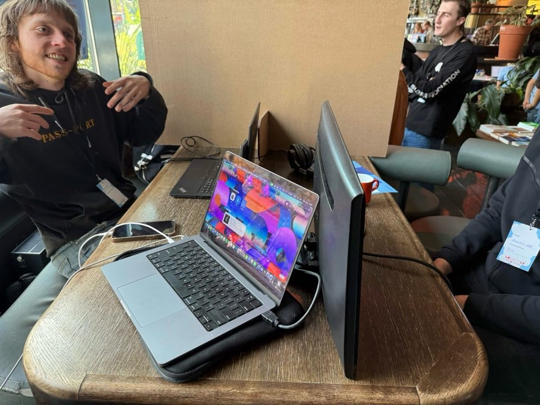
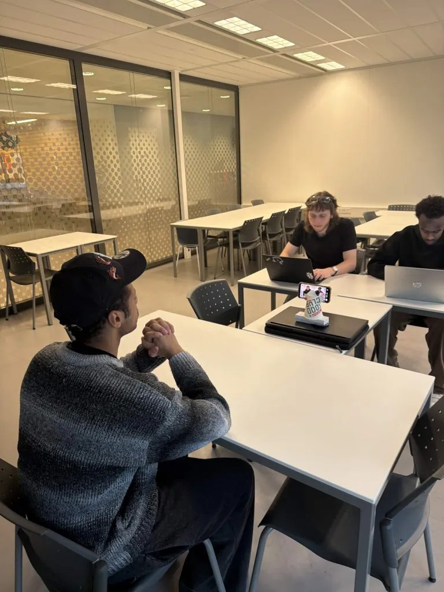
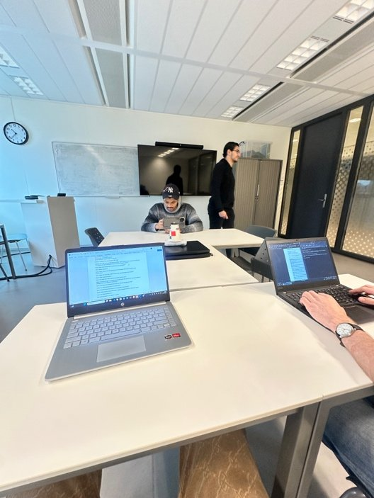
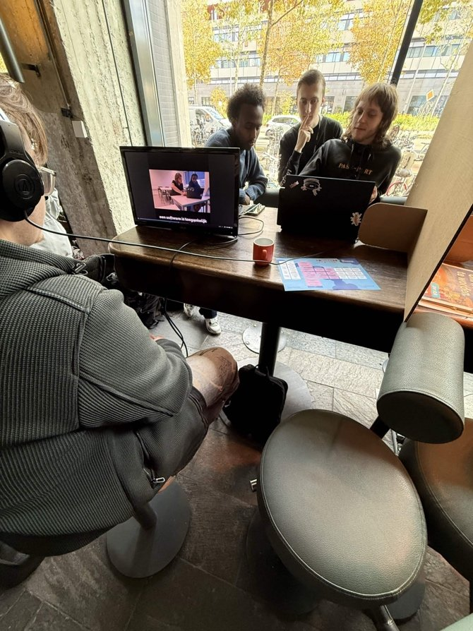
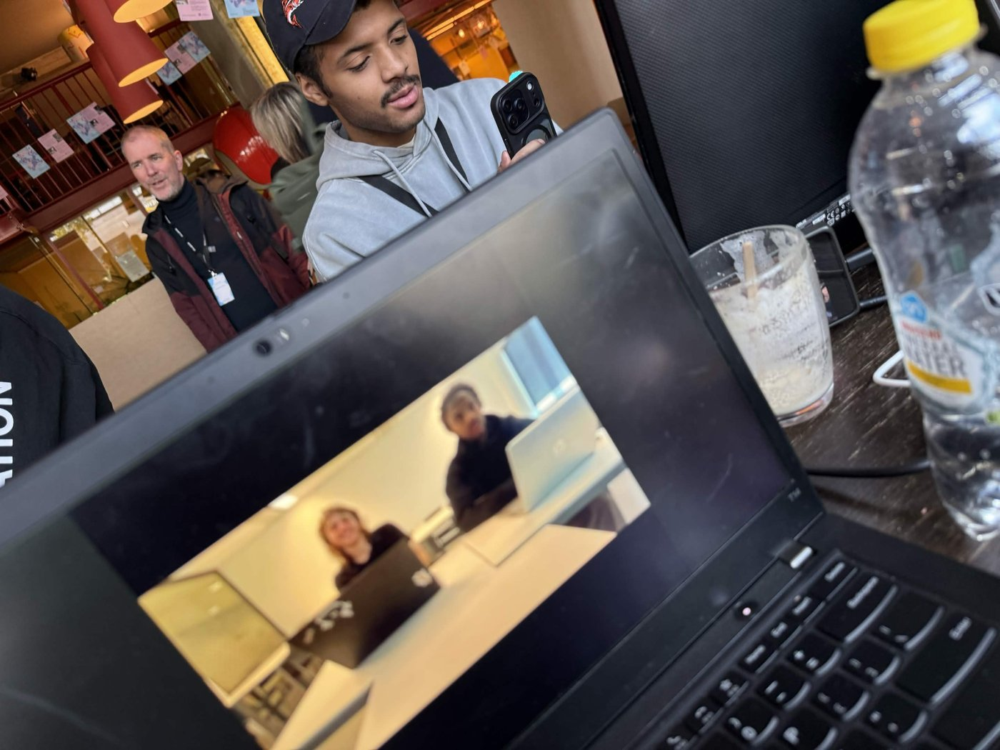

01 / WAT WE DEDEN
Van idee naar prototype
In sprint 2 hebben we van ons idee een werkend prototype gemaakt. Ons project gaat over function creep: technologie die voor het ene doel wordt gemaakt, maar ongemerkt voor iets heel anders wordt gebruikt. Denk aan een camera die je accepteert omdat hij een duidelijk doel lijkt te hebben, terwijl je beelden daarna ook voor iets anders kunnen dienen.
In ons geval is dat een deepfake cinema. Een bezoeker kijkt naar een educatieve film, terwijl een camera op de achtergrond diens gezicht vastlegt. Aan het einde van de film verschijnt het eigen gezicht van de bezoeker ineens op een personage in de video. De camera leek dus onderdeel van de filmervaring, maar werd gebruikt voor iets wat de bezoeker niet had verwacht.
Het prototype bestaat uit een monitor en een camera. De deepfake wordt live gegenereerd, terwijl de bezoeker nog naar de film kijkt. We hebben het prototype gepresenteerd op Society 5.0.

02 / MIJN BIJDRAGE
Meewerken aan de video
Ik heb meegewerkt aan de video die bezoekers te zien krijgen. Het script heb ik gelezen en ik heb er zelf in geacteerd. Daarnaast heb ik meegeholpen met het schrijven van het script.
De film is bewust een educatieve video over technologie en privacy. Dat past bij ons concept: de bezoeker verwacht uitleg over iets onschuldigs en let daardoor niet op de camera. Juist doordat de inhoud over privacy gaat, wordt het moment aan het einde extra ironisch. Bij het schrijven hebben we daarom gelet op een toon die geloofwaardig en informatief overkomt, zodat de bezoeker niet doorheeft dat er iets staat te gebeuren.


Voordat we zelf gingen filmen, heb ik eerst onderzocht of we de video met AI konden maken. Dat leek een logische keuze voor een project over deepfakes. Het bleek uiteindelijk niet goed uit te komen: het kostte te veel tijd en geld voor het resultaat dat we nodig hadden. Daarom hebben we ervoor gekozen om de video zelf op te nemen. Dat gaf ons meer controle over het script en het personage waarop het gezicht van de bezoeker terecht moest komen.
03 / WAAR WE TEGENAAN LIEPEN
Een probleem vlak voor de presentatie
Net voor de presentatie werkte onze monitor niet goed. De instellingen klopten niet, waardoor het beeld niet liep zoals we hadden getest. Daardoor moesten we op het laatste moment de opstelling aanpassen. Dit zorgde voor flinke stress, omdat we vlak voor het presenteren nog een oplossing moesten vinden.
Uiteindelijk is het gelukt om alles op tijd werkend te krijgen. Voor een volgende keer weten we dat we de opstelling eerder op de echte locatie en met de echte apparatuur moeten testen, in plaats van alleen in het lokaal.
04 / DE PRESENTATIE
De reactie van bezoekers
Tijdens Society 5.0 kwamen veel bezoekers langs. Mensen reageerden geschokt toen ze hun eigen gezicht op het personage zagen verschijnen. Sommigen moesten ook lachen, maar de schrik was bij bijna iedereen zichtbaar. Dat was precies het effect waar we naar op zoek waren.


De reactie maakte duidelijk hoe onverwacht technologie kan worden ingezet en hoe makkelijk gegevens voor iets anders kunnen worden gebruikt dan je dacht. Ik ben trots op het resultaat: na de stress vlak voor de presentatie werkte het prototype en kreeg het de reactie waar we op hoopten.